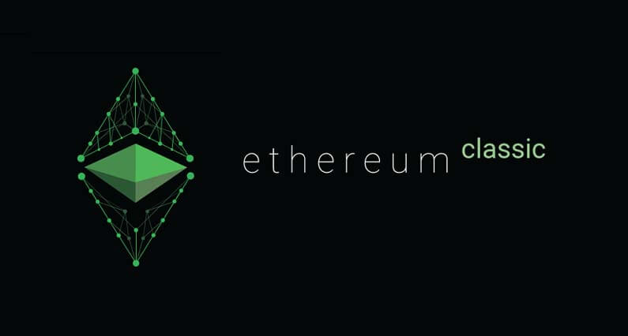

Mi az az Ethereum Classic és a DAO támadás?
Ethererum Classic (ETC) egy nyílt forráskódú decentralizált applikációk és okos szerződések futtatására alkalmas platform, amely blokklánc technológiára és az eredeti Ethereum-ra épül. Csakúgy mint Ethereum-nak van egy tokenje az Ether Classic amelyet a felhasználók fizetésre használhatnak a platformon.
DAO támadás
Ethereum és Ethereum Classic szétválása egy a DAO (Decentralized Autonomous Organization) névre hallgató szervezethez vezet vissza.
A DAO egy decentralizált kockázati tőke befektetésével foglalkozó szervezetnek indult, amely az Ethereum hálózatra épített Dapp-ok pénzügyi támogatásával foglalkozott volna. Ez azért lett volna forradalmi újítás, mert a DAO token birtokosai szavazati úton dönthették volna el mely Dapp-ok kaphatnak támogatást.
Az óriási lehetőségekkel kecsegtető DAO sok ember érdeklődését keltette fel, már az első hónapban 150 millió dollárnyi Ether-t gyűjtött.
A támogatóknak akik ki szerettek volna lépni a DAO-ból, megvolt erre a lehetőségük. Ha így döntöttek visszakaphatták volna a befektetett Ether-t, az egyetlen kikötés az volt, hogy a 28 napig meg kellett tartaniuk mielőtt elkölthették volna. Ez a funkció okozta a DAO vesztét.
2016 Június 17-én ismeretlen tettesek 50 millió dollárt loptak el Ether-ben, amely az akkori Ether készlet 14%-a volt.
A DAO elhagyásához csak egy kérést kellett benyújtani, ami ezután visszafizette az Ether-t a DAO tokenekért, ezután pedig feljegyezte a tranzakciót a főkönyvbe. A hacker képes volt ezt a kérést ismétlésszerűen végrehajtatni amely lehetővé tette, hogy ugyanazokat a DAO tokeneket váltsa vissza többször egymás után mielőtt azok bekerültek volna a főkönyvbe.
A támadó képes volt ezt a kiskaput kihasználni amíg a teljes DAO tőke 1/3-át ellopta.
A DAO és Ethereum közösség azonnal elkezdtek megoldást keresni a problémára. A többség a Hard leágazás (Fork) mellett döntött, így gyakorlatilag leállítva a régi blokkláncot és teljesen újat hozott létre. Ethereum sikeresen visszaszerezte az ellopott 50 millió dollárt. Ez az amit ma Ethereum (ETH) névben ismerünk.
A Hard leágazás melletti döntést nem támogatta mindenki a közösségből, egy kis részük hű maradt az eredeti blokklánchoz. Ethereum Classic (ETC) még mindig az eredeti blokkláncot használja.
Amíg Ethereum semmilyen formában nem volt felelős a történtekért, az Ethereum piaci ára $20-ról leesett $13-ra.
A hard leágazás segített mindenkinek visszaszerezni a befektetését, egy visszatérítéses okos szerződéssel. Minden 100 DAO tokenért 1 ETH-t kaptak a befektetők.
Ideológia
Ethereum-ot először a pénzügyi korrupció elleni fellépésként hozták létre. A blokkláncnak amelyet nem lehet megváltoztatni az volt a célja, hogy megszabaduljon az emberi tényezőktől amelyek megronthatják azt. A DAO támadás kettéosztotta a közösséget, mivel a Hard leágazás, amely megváltoztatja a blokkláncot, ellentétes Ethereum eredeti elveivel. Ethereum Classic-nál maradtak a fanatikusok akik szerint a 'kód a törvény'.
ETC használhatósága
A fejlesztői csapat, a bányászok és a piac nagy része is Ethereum-ot követte a leágazás után. ETC így elég nagy hátrányban maradt. Manapság csendben meghúzódik a háttérben, nem kavarva nagy port.
ETC vásárlás és tárolás
ETC megvásárolható a legtöbb kriptovaluta kereskedelmi weboldalon. Binance és Bitfinex oldalon részletes útmutatót találsz az ilyen oldalak használatához, és ETC vásárlásához.
Ethereum Classic-ot tárolhatod ingyenesen, a Jaxx vagy Exodus tárcákon. De a két legjobb hardver tárca is támogatja ETC-t. Ledger Nano S és Trezor.
Záró gondolatok
Ethereum hatalmas visszatérést volt képes végrehajtani. Ereje a mögötte lévő közösségben rejlik, ha a decentralizáció a jövő akkor Ethereum központi szerepet fog játszani ebben.
Mivel a fejlesztők nagy része Ethereum oldalán kötött ki a leágazásnál, Ethereum Classic nem tud túl sokat felmutatni a kettészakadás óta. Az igazi kérdés, hogy miért választanák az emberek ETC-t ETH-al szemben? Ethereum Classic vajon szépen lassan a feledés homályába vész?


2018. Január 30.